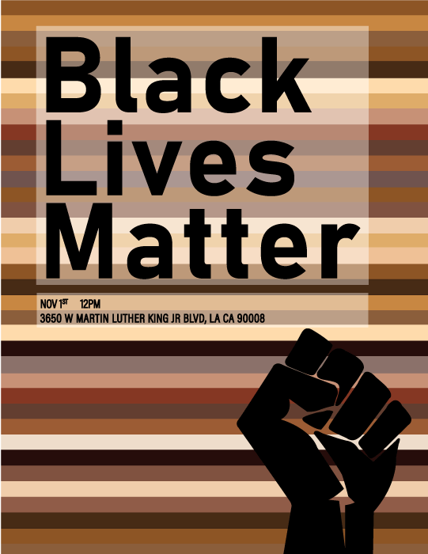

Event Poster Design:
Black Lives Matter Protest
Brief:
to design a poster for a community center that promotes an event that was suppose to happen during the pandemic
Solution:
- the colorful background colors and the bold shapes of my poster are eye-catching, which helps in advocating for the event
- the poster can easily be used to protest during the event since the message of the movement is boldyly displayed
- the design can be adjusted for different medias with minimal adjusting, making for seamless event identity
Proccess:
These were the drafts.
It was important to me to thst the poster could be used during the event for protesting so I chose a clear font that ledgible from far away and different angles.
I also wanted to emphasize the BLM movement's mission of inclusion and diversity so I made the color scheme around skin colors.
I found that the best contrast and ledgibility came from black block text on a overlay on the colorful background.
